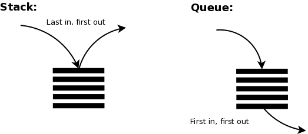

Queue va Stack
Staklar va navbatlar — dasturchilarga ma'lumotlarni samarali boshqarish va qayta ishlashga yordam beradigan ma'lumotlar tuzilmalaridir. Ularning ikkalasi ham chiziqli ma'lumotlar tuzilmalaridir, lekin ular ma'lumotlar elementlarini qanday tartibga solishda farqlanadi
Illustration
Massiv:
Massiv - bu ketma-ket xotira joylarida saqlangan elementlar to'plamidir. G'oya shundan iboratki, bir xil turdagi bir nechta elementlarni birgalikda saqlash kerak. Bu har bir elementning joylashuvini hisoblashni osonlashtiradi, chunki asosiy qiymatga (odatda massivning birinchi elementining xotira joylashuvi bilan belgilanadi) faqat bitta ofset qo'shish kifoya. Diagramma orqali massiv tasviri quyida keltirilgan:

Navbat:
Navbat - bu chiziqli tuzilma bo'lib, unda operatsiyalar ma'lum bir tartibda bajariladi. Bu tartib Birinchi Kirgan Birinchi Chiqadi (FIFO) qoidasi bilan belgilanadi. Navbatning yaxshi misoli - bu resurs uchun iste'molchilar navbati bo'lib, bunda birinchi kelgan iste'molchi birinchi xizmat ko'rsatiladi. Stack va navbatning farqi elementlarni olib tashlashda. Stackda oxirgi qo'shilgan element olib tashlanadi, navbatda esa birinchi qo'shilgan element olib tashlanadi. Quyida navbatning diagrammatik tasviri keltirilgan:

Stack:
Stack bu chiziqli ma'lumotlar tuzilmasi bo'lib, elementlarni faqat bitta tomondan, ya'ni tepasi (top) dan qo'shish va o'chirish mumkin. Stack LIFO (Oxirgi Kirgan Birinchi Chiqadi) tamoyiliga amal qiladi, ya'ni oxirgi qo'shilgan element birinchi bo'lib chiqadi. Elementni stackga qo'shish operatsiyasi push, elementni stackdan olib tashlash esa pop deb ataladi. Stackda doimo oxirgi qo'shilgan elementni top deb nomlangan ko'rsatkich yordamida kuzatib boramiz.
Quyida stackning diagrammatik tasviri keltirilgan:

Quyida Array, Stack, va Queue o'rtasidagi farqning jadval ko'rinishidagi tasviri keltirilgan:
| Queue | Array | Stack |
|---|---|---|
| Queue FIFO (Birinci Kirgan Birinchi Chiqadi) tamoyiliga asoslangan, ya'ni birinchi qo'shilgan element birinchi bo'lib chiqadi. | Arrayda elementlar indekslarga ega. Masalan, to'rtinchi elementga murojaat qilish uchun massiv nomini va kvadrat qavs ichida indeksni yozish kerak: arr[4]. |
Stack LIFO (Oxirgi Kirgan Birinchi Chiqadi) tamoyiliga asoslangan, ya'ni oxirgi qo'shilgan element birinchi bo'lib chiqadi. |
| Queueda qo'shish faqat "orqa"dan, o'chirish esa faqat "old"dan amalga oshiriladi. | Arrayda qo'shish va o'chirish har qanday indeksda amalga oshirilishi mumkin. | Stackda qo'shish va o'chirish faqat "tepasi (top)"dan amalga oshiriladi. |
| Queue dinamik yoki belgilangan o'lchamga ega bo'lishi mumkin. | Array faqat belgilangan o'lchamga ega. | Stack dinamik yoki belgilangan o'lchamga ega bo'lishi mumkin. |
| Queue turli ma'lumot turlarini saqlashi mumkin. | Array bir xil ma'lumot turlarini saqlaydi. | Stack turli ma'lumot turlarini saqlashi mumkin. |
| Queue turlari: aylana queue, ustuvorlikka ega queue, ikki tomonlama queue. | Array turlari: 1D, 2D va hokazo. | Stack faqat bitta turga ega. |
Video Explanation
Queue Code Example
let queue = [];
// Enqueue operatsiyasi (elementni navbatga qo'shish)
queue.push(10);
queue.push(20);
queue.push(30);
console.log("Queue: ", queue); // [10, 20, 30]
// Dequeue operatsiyasi (navbatdan birinchi elementni chiqarish)
let removedElement = queue.shift(); // FIFO printsipi bo'yicha birinchi element chiqadi
console.log("Chiqarilgan element: ", removedElement); // 10
console.log("Yangi queue: ", queue); // [20, 30]
// Front operatsiyasi (navbatning boshidagi elementni ko'rish)
let frontElement = queue[0];
console.log("Navbatning boshidagi element: ", frontElement); // 20
// Queue bo'sh yoki yo'qligini tekshirish
console.log("Queue bo'shmi?: ", queue.length === 0); // false
Stack Code Example
// Stack oddiy array yordamida
let stack = [];
// Push operatsiyasi (element qo'shish)
stack.push(10);
stack.push(20);
stack.push(30);
console.log("Stack: ", stack); // [10, 20, 30]
// Pop operatsiyasi (elementni olib tashlash)
let removedElement = stack.pop();
console.log("Olib tashlangan element: ", removedElement); // 30
console.log("Yangi stack: ", stack); // [10, 20]
// Peek operatsiyasi (eng ustki elementni ko'rish)
let topElement = stack[stack.length - 1];
console.log("Eng ustki element: ", topElement); // 20
// Stack bo'shmi yoki yo'qmi tekshirish
console.log("Stack bo'shmi? ", stack.length === 0); // false